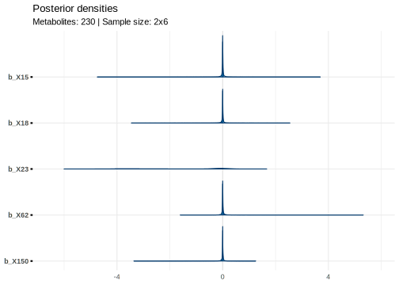
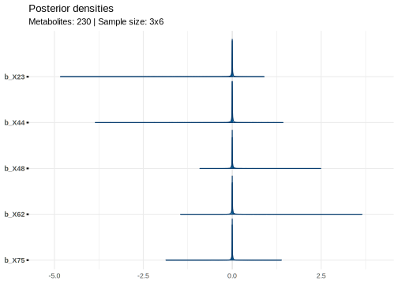
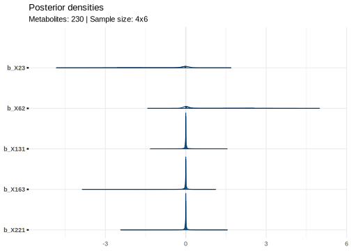

Simulations for power analysis
Estimating the number of samples required to detect relevant predictors among large numbers of irrelevant predictors.
Introduction
One way to understand how many samples need to be collected is to analyze simulated data. For this to work, we rely on the simulation capturing the relevant aspects of the true data generating process sufficiently well. Under these conditions, we can explore different scenarios by varying the parameters of the simulation.
In the scenario presented here, we are interested in finding at least one strong correlate of a target biomarker. The potential correlates are metabolites, and our lab analysis returns a whole lot of them. We don’t know which ones are important, so we’ll be working with the regularized horseshoe prior to help us out. For simplicity, you can think of this as a fully Bayesian alternative to LASSO.
- Problem
- Getting these samples is expensive and requires a lot of work. We have to figure out how many we need before we commit to too few, but also want to avoid paying for unnecessarily many samples.
Loading dependencies
My script depends on the following packages:
library(brms)
library(rethinking)
library(bayesplot)
library(ggplot2)These packages must be installed first. Note that the rethinking package is a little special and requires to be installed from GitHub instead of the official CRAN repository.
devtools::install_github("rmcelreath/rethinking")You may be prompted to install dependencies of the rethinking package. Select the option that installs all of them. In case something goes wrong, you can also run:
install.packages(c("coda","mvtnorm","devtools","loo","dagitty","shape"))Parameter settings
The script describes a loop over different numbers of batches, assuming a set number of samples per batch. We will begin by defining the lower and upper boundaries of the number of available batches.
min_batches <- 2
max_batches <- 5In the scenario with the least data, we’re working with two batches, and in the best case with five batches.
Other values which do not change across different batch numbers should also be defined outside of the loop. These are the number of metabolites, the batch size, the proportion of relevant metabolites, and the strength of association of a relevant metabolite with the target biomarker.
n_metabolites <- 230
n_per_batch <- 6
true_prop_relevant <- 0.02 # two percent of all metabolites are relevantNext, we will determine which of the metabolites is a relevant correlate of the target biomarker. To do so, we sample from a Bernoulli distribution with \(p=\text{true-prop-relevant}\). We then determine if a given relevant correlate has a positive or negative sign. Once again, we sample from a Bernoulli distribution, but here with \(p = 0.5\).
Finally, we set the strength of the association and create the “true” vector of regression coefficients.
The goal of our simulation is to recover the “true” vector of regression coefficients \(\beta\).
If our model finds the signals of the very few relevant correlates among the many irrelevant ones, we have succeeded! 🎉
Signals and noise
# Personally not convinced randomness needs to be controlled, but here we go
set.seed(42)
# Determine if a metabolite is a relevant predictor
is_relevant <- rbinom(n_metabolites, 1, true_prop_relevant)
# Determine if a metabolite positively correlates with target _if_ it is relevant
is_positive <- rbinom(n_metabolites, 1, 0.5)
# Set strength of association (the "signal")
signal <- 3
# Create true coefficient vector
beta_mu <- is_relevant * ifelse(is_positive, signal, -signal)
# Sample the true parameters with some noise
beta <- rnorm(n_metabolites + 1, beta_mu, 0.1)Note that running only a single iteration (or repeatedly running it with the same seed) will misrepresent the inherent probabilistic nature of both the simulation and the Bayesian inference. We would want to repeat this simulation to really understand whether a given number of batches allows us to reliably detect the “true” correlates.
The difficulty of telling apart signal and noise depends on how “loud” each of them is. I won’t hear you scream next to a highway, but certainly at the library!
I am not working with lab measurements a lot, but would assume that there is less noise in these than, for example, in the patient-reported outcomes that I typically work with.
In the results shown here, the noise is set to \(\frac{1}{3}\) of the signal strength. I have tried setting them to equal strength, and in this scenario, five batches no longer detect any signal. With the noise at \(\frac{1}{6}\) of the signal strength, we detect the true signal one batch earlier compared to the noise at \(\frac{1}{3}\).
noise <- signal / 3Looping over batch sizes
Next up is the loop initiation. Inside the loop, we define the parameters which depend on the number of batches, such as the total number of samples.
for (k in min_batches:max_batches) {
# Define k-dependent parameters
n_batches <- k
n_samples <- n_batches * n_per_batchSince much depends on the total number of samples, all the other parameters have to be defined inside the loop, too.
All the code that follows lives inside the loop.
Design matrix
The parameters defined in the loop include, for example, the matrix of metabolite measurements \(X\) (also called “design matrix” or “predictor matrix”). This is sampled from a multivariate normal distribution, which simulates some degree of intercorrelated metabolite measurements (for more info on how we could parameterize this correlation matrix, see LKJ distribution on Wikipedia).
# Sample the predictors and store in design matrix X together with intercept
# Currently on z scale
X <- rmvnorm2(
n_samples,
Mu = rep(0, n_metabolites), # Mean vector
sigma = rep(1, n_metabolites), # Error variance
Rho = rlkjcorr(1, n_metabolites, 1) # Correlations of metabolite concentrations
)Random intercept
Now, we will set up the multilevel structure. Most importantly, we will have to note the group_index of each individual sample. After that, we sample a random intercept for each batch from a relatively wide Normal distribution.
# Number samples from batch by their batch number
batch_index <- rep(1:n_batches, each = n_per_batch)
# Sample random batch intercepts
batch_intercept <- rnorm(n_batches, 0, 3)
# Sample y before treatment, depends on batch intercept
y_t0 <- rnorm(n_samples, mean = batch_intercept[batch_index], sd = 1)Outcome
We’re almost there! We now bring all the parameters and “measured” metabolite concentrations together in a linear equation. With that in our hands, we only have to sample from a normal distribution and add some random noise!
# Compute the linear predictor
mu <- y_t0 + X %*% beta
# Sample the observed values
y <- rnorm(n_samples, mu, sd = noise)Modeling
All that’s left is to wrap everything in a data frame, define the model formula and priors, and hit run! 🔥
# Store everything in a data.frame
data <- data.frame(y = y, y_t0 = y_t0, group_index = group_index)
data$X <- X
# Define the formula
formul <- bf(y ~ 1 + y_t0 + X + (1 | group_index))
# Define the priors
priors <- prior(horseshoe(par_ratio = true_prop_relevant), class = "b")
# Print info about current iteration
cat("Now sampling from model with ", k, " batches.")
# Fit the model
fit <- brm(
formul,
data = data,
prior = priors,
chains = 4,
cores = 4,
iter = 5000,
control = list(adapt_delta = 0.95)
)Stan code
The call to brms returns a highly optimized Stan script, with a lot of speed ups and posterior geometry improvements that I would not know how to implement myself. We can ask brms to return the stancode generated for this model with the make_stancode() function:
// generated with brms 2.21.0
functions {
/* Efficient computation of the horseshoe scale parameters
* see Appendix C.1 in https://projecteuclid.org/euclid.ejs/1513306866
* Args:
* lambda: local shrinkage parameters
* tau: global shrinkage parameter
* c2: slap regularization parameter
* Returns:
* scale parameter vector of the horseshoe prior
*/
vector scales_horseshoe(vector lambda, real tau, real c2) {
int K = rows(lambda);
vector[K] lambda2 = square(lambda);
vector[K] lambda_tilde = sqrt(c2 * lambda2 ./ (c2 + tau^2 * lambda2));
return lambda_tilde * tau;
}
/* compute scale parameters of the R2D2 prior
* Args:
* phi: local weight parameters
* tau2: global scale parameter
* Returns:
* scale parameter vector of the R2D2 prior
*/
vector scales_R2D2(vector phi, real tau2) {
return sqrt(phi * tau2);
}
}
data {
int<lower=1> N; // total number of observations
vector[N] Y; // response variable
int<lower=1> K; // number of population-level effects
matrix[N, K] X; // population-level design matrix
int<lower=1> Kc; // number of population-level effects after centering
int<lower=1> Kscales; // number of local scale parameters
// data for the horseshoe prior
real<lower=0> hs_df; // local degrees of freedom
real<lower=0> hs_df_global; // global degrees of freedom
real<lower=0> hs_df_slab; // slab degrees of freedom
real<lower=0> hs_scale_global; // global prior scale
real<lower=0> hs_scale_slab; // slab prior scale
int prior_only; // should the likelihood be ignored?
}
transformed data {
matrix[N, Kc] Xc; // centered version of X without an intercept
vector[Kc] means_X; // column means of X before centering
for (i in 2:K) {
means_X[i - 1] = mean(X[, i]);
Xc[, i - 1] = X[, i] - means_X[i - 1];
}
}
parameters {
vector[Kc] zb; // unscaled coefficients
real Intercept; // temporary intercept for centered predictors
// horseshoe shrinkage parameters
real<lower=0> hs_global; // global shrinkage parameter
real<lower=0> hs_slab; // slab regularization parameter
vector<lower=0>[Kscales] hs_local; // local parameters for the horseshoe prior
real<lower=0> sigma; // dispersion parameter
}
transformed parameters {
vector[Kc] b; // scaled coefficients
vector<lower=0>[Kc] sdb; // SDs of the coefficients
vector<lower=0>[Kscales] scales; // local horseshoe scale parameters
real lprior = 0; // prior contributions to the log posterior
// compute horseshoe scale parameters
scales = scales_horseshoe(hs_local, hs_global, hs_scale_slab^2 * hs_slab);
sdb = scales[(1):(Kc)];
b = zb .* sdb; // scale coefficients
lprior += student_t_lpdf(Intercept | 3, -6.9, 18.7);
lprior += student_t_lpdf(hs_global | hs_df_global, 0, hs_scale_global * sigma)
- 1 * log(0.5);
lprior += inv_gamma_lpdf(hs_slab | 0.5 * hs_df_slab, 0.5 * hs_df_slab);
lprior += student_t_lpdf(sigma | 3, 0, 18.7)
- 1 * student_t_lccdf(0 | 3, 0, 18.7);
}
model {
// likelihood including constants
if (!prior_only) {
target += normal_id_glm_lpdf(Y | Xc, Intercept, b, sigma);
}
// priors including constants
target += lprior;
target += std_normal_lpdf(zb);
target += student_t_lpdf(hs_local | hs_df, 0, 1)
- rows(hs_local) * log(0.5);
}
generated quantities {
// actual population-level intercept
real b_Intercept = Intercept - dot_product(means_X, b);
}Postprocessing
With the model of this iteration having been fit, we now want to look at the results. For this, we need to extract the posterior samples from the fit object.
# Get posterior samples
posterior <- as.matrix(fit)
# Simplify retrieval of relevant or irrelevant metabolites
sample_metabolite_categories <- function(n, relevance) {
c(1:n_metabolites)[ifelse(is_relevant == relevance, TRUE, FALSE)] |>
sample(n)
}
# Draw a few relevant and irrelevant metabolites for visualization purposes
rel_idx <- sample_metabolite_categories(2, 1)
irl_idx <- sample_metabolite_categories(3, 0)Visualization
Let’s have a look at what our models for the different batch sizes found!
# Quick and dirty ggplot theme
bayesplot_theme_set(theme_minimal())
# Create posterior density plot for this iteration
mcmc_areas(
posterior,
pars = paste0("b_X", sort(c(rel_idx, irl_idx))),
prob = 0.8
) + ggtitle(
"Posterior densities",
paste0(
"Metabolites: ", n_metabolites,
" | Sample size: ", n_batches, "x", n_per_batch
)
)
# Save results to current directory
ggsave(
paste0(
"horseshoe_posteriors_",
n_samples,
"samples",
n_metabolites,
"metabolites.svg"
),
height = 5,
width = 7
)
} # End of loop, seems that the highlighter is confused :DThe visualization here omits a lot of the irrelevant metabolites to improve visual clarity. In each plot, a different selection of irrelevant metabolites is sampled, while the relevant ones are always included (b_X23 and b_X62).




Alright! It seems that five batches would be necessary with the assumptions about the signal-to-noise ratio made here.